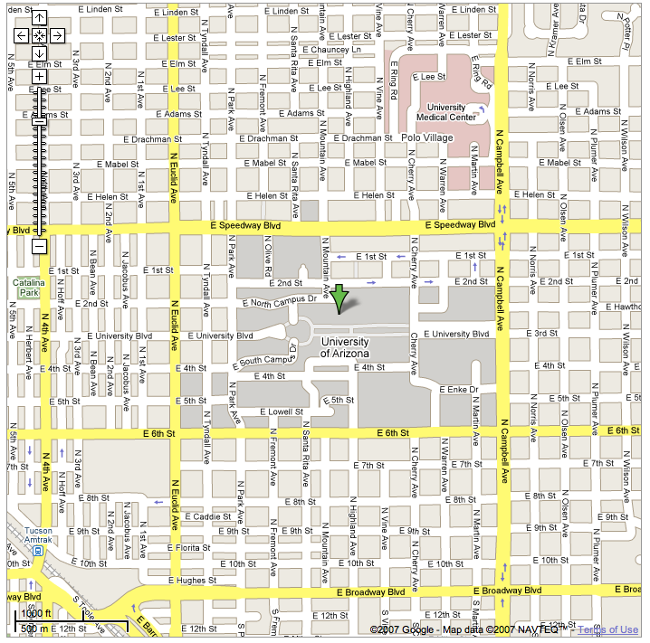

From the Tucson airport to the DoubleTree HotelAs you exit the airport you will be travelling north on Tucson Blvd. In under a mile, turn right at Valencia and, after one mile, turn left on Palo Verde. Follow Palo Verde for about 4.5 miles, and then after some curves, it will merge onto Alvernon Way. Less than 1.5 miles after that, the DoubleTree will be on the right. From the Tucson airport to the MarriottAs you exit the airport you will be travelling north on Tucson Blvd. After about 2 miles, take a soft left onto Benson Highway, then the next major right, onto Kino Parkway. After about 5 miles, Kino Parkway becomes Campbell Avenue as you cross Broadway. At the next light turn left onto 6th street. The fourth light is Euclid Avenue. Turn right on Euclid and then right again on Second Street. The hotel is on your right and there is a garage on your left. From the Tucson airport to the Sheraton (under renovation)As you exit the airport you will be travelling north on Tucson Blvd. After about 2 miles, take a soft left onto Benson Highway, then the next major right, onto Kino Parkway. After about 5 miles, Kino Parkway becomes Campbell Avenue as you cross Broadway. About a mile later, Campbell meets Speedway Blvd. and the Sheraton is on the southeast corner (the near corner on your right). From the Tucson airport to the Math DepartmentAs you exit the airport you will be travelling north on Tucson Blvd. After about 2 miles, take a soft left onto Benson Highway, then the next major right, onto Kino Parkway. After about 5 miles, Kino Parkway becomes Campbell Avenue as you cross Broadway. At the next light turn left onto 6th street. After 2 lights and about 100 yards there is an entrance to a garage on the right. The math department is in the 7-story building directly north of the east end of the garage. The area around the University (Google Maps) |